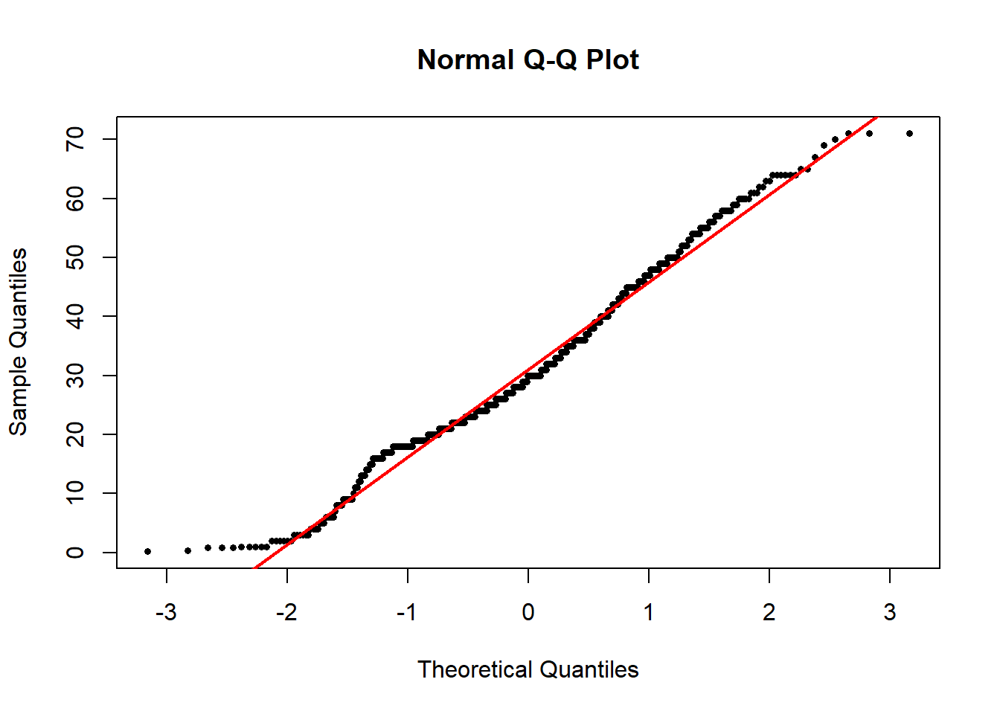

# Load data
# NB your file path may be different than mine
library(ggplot2)
titanicData <- read.csv("data/titanic.csv" )Lab 05 The Gaussian
1 Objectives
Visualize properties of the Gaussian distribution
Understand the Central Limit Theorem
Calculate sampling properties of sample means
Decide whether a data set likely comes from a Gaussian distribution
Data for all labs (unzip to your working directory)
2 Start a script!
For this and every lab or project, begin by:
starting a new script
create a good header section and table of contents
save the script file with an informative name
set your working directory
Aim to make the script useful as a future reference for doing things in R - this will come in handy for projects and assessments!
3 The Gaussian
This lab mainly focuses on exploring the nature of the Gaussian distribution. We will also learn a couple of tools that help us decide whether a particular data set is likely to have come from population with an approximately Gaussian distribution.
Many statistical tests assume that the variable being analyzed has a Gaussian distribution. Fortunately, some of these tests are robust to this assumption: that is, they work reasonably well, especially when sample size is large (unless the assumption is grossly violated). Therefore it is often sufficient to be able to assess whether the data come from a distribution whose shape is approximately Gaussian (e.g., are the data similar enough to a bell curve?).
A good way to start is to simply visualize the frequency distribution of the variable in the data set by drawing a histogram. Let’s use the age of passengers on the Titanic for our example.
Remember we can use ggplot() to draw histograms.
# hist of passengers by age
ggplot(titanicData, aes(x = age)) +
geom_histogram(binwidth = 10)Warning: Removed 680 rows containing non-finite values (stat_bin).3.1 hist() to assess distribution
If we are just drawing a histogram for ourselves to explore and better understand the data, it is possibly easier to use a function from base R, hist(). Give hist() a vector of data as input, and it will print a histogram in the plots window.
hist(titanicData$age)Looking at this histogram, we see that the frequency distribution of the variable does not exactly resenble Gaussian. It is slightly asymmetric and there seems to be a second mode near 0. On the other hand, like the Gaussian distribution, this frequency distribution has a large mode near the center of the distribution, frequencies mainly fall off to either side, and there are no obvious outliers. This might be close enough to Gaussian that most methods assuming Gaussian would work fine.
3.2 QQ plot
Another graphical technique that can help us visualize whether a variable is approximately Gaussian is the quantile plot (or a QQ plot). The QQ plot shows the data on the vertical axis ranked in order from smallest to largest (“sample quantiles” in the figure below). On the horizontal axis, it shows the expected value of an individual with the same quantile if the distribution were Gaussian (“theoretical quantiles” in the same figure). The QQ plot should follow more or less along a straight line if the data come from a Gaussian distribution (with some tolerance for sampling variation).
QQ plots can be made in R using a function called qqnorm(). Simply give the vector of data as input and it will draw a QQ plot for you. qqline() will draw a line through that Q-Q plot to make the linear relationship easier to see.
# qq plot
qqnorm(titanicData$age,
pch = 16, cex = .6) # Mere vanity
qqline(titanicData$age,
col = "red", lwd = 2, lty = 1) # Mere vanity
This is what the resulting graph looks like for the Titanic age data. The dots do not land along a perfectly straight line. In particular the graph curves at the upper and lower end. However, this distribution definitely would be close enough to Gaussian to use most standard methods, such as the t-test.
It can be difficult to interpret QQ plots without experience. One of the goals of this lab is to develop some visual experience about what these graphs look like when the data is truly Gaussian. To do that, we will take advantage of a function built into R to generate random numbers drawn from a Gaussian distribution. This function is called rnorm().
3.3rnorm()
The function rnorm() will return a vector of numbers, all drawn randomly from a Gaussian distribution. It takes three arguments:
n: how many random numbers to generate (the length of the output vector)
mean: the mean of the Gaussian distribution to sample from
sd: the standard deviation of the Gaussian distribution
For example, the following command will give a vector of 20 random numbers drawn from a Gaussian distribution with mean 13 and standard deviation 4:
set.seed(42) # For replicability
rnorm(n = 20, mean = 13, sd = 4) [1] 18.483834 10.741207 14.452514 15.531450 14.617073 12.575502 19.046088
[8] 12.621364 21.073695 12.749144 18.219479 22.146582 7.444557 11.884845
[15] 12.466715 15.543802 11.862988 2.374178 3.238132 18.280453Let’s look at a QQ plot generated from 1000 numbers randomly drawn from a Gaussian distribution:
# this is what Gaussian should look like
# we know because the sample IS from a Gaussian distribution
set.seed(42)
Gaussian_vector <- rnorm(n = 1000, mean = 13, sd = 4)
qqnorm(Gaussian_vector)
qqline(Gaussian_vector, col = 'red')These points fall mainly along a straight line, but there is some wobble around that line even though these points were in fact randomly sampled from a known Gaussian distribution. With a QQ plot, we are looking for an overall pattern that is approximately a straight line, but we do not expect a perfect line. In the exercises, we’ll simulate several samples from a Gaussian distribution to try to build intuition about the kinds of results you might get.
When data are not Gaussian distributed, the dots in the quantile plot will not follow a straight line, even approximately. For example, here is a histogram and a QQ plot for the population size of various counties, from the data in countries.csv. These data are very skewed to the right, and do not follow a Gaussian distribution at all.
countries <- read.csv("data/countries.csv", header=T)
hist(countries$total_population_in_thousands_2015, breaks=20,
main = 'Super skewed')qqnorm(countries$total_population_in_thousands_2015,
main = 'Where I\'m from, we\'d say that ain\'t normal (Gaussian)')
qqline(countries$total_population_in_thousands_2015, col = 'red')4 Transformations
When data are not Gaussian distributed, we can try to use a simple mathematical transformation on each data point to create a list of numbers that still convey the information about the original question but that may be better matched to the assumptions of our statistical tests. We may see more about such transformations later, but for now let’s learn how to do one of the most common data transformations, the log-transformation.
With a transformation, we apply the same mathematical function to each value of a given numerical variable for individual in the data set. With a log-transformation, we take the logarithm of each individual value for a numerical variable.
We can only use the log-transformation if all values are greater than zero. Also, it will only improve the fit of the Gaussian distribution to the data in cases when the frequency distribution of the data is right-skewed.
To take the log transformation for a variable in R is very simple. We simply use the function log(), and apply it to the vector of the numerical variable in question. For example, to calculate the log of age for all passengers on the Titanic, we use the command:
# just first 100
log(titanicData$age[1:100]) [1] 3.36729583 0.69314718 3.40119738 3.21887582 -0.08697501 3.85014760
[7] 4.14313473 3.66356165 4.06044301 4.26267988 3.85014760 2.94443898
[13] NA NA NA 3.91202301 3.17805383 3.58351894
[19] 3.61091791 3.85014760 3.25809654 3.21887582 3.21887582 2.94443898
[25] 3.33220451 3.80666249 3.66356165 3.40119738 4.06044301 NA
[31] 3.80666249 3.09104245 NA 3.71357207 3.87120101 NA
[37] 3.78418963 4.07753744 4.09434456 3.80666249 NA 3.97029191
[43] 4.06044301 3.58351894 3.49650756 NA NA 3.58351894
[49] 3.58351894 2.63905733 2.39789527 3.89182030 NA 3.58351894
[55] NA 3.82864140 3.85014760 3.29583687 3.43398720 NA
[61] NA NA NA 3.29583687 3.25809654 NA
[67] NA 4.15888308 3.61091791 3.66356165 4.00733319 NA
[73] 4.24849524 4.23410650 3.58351894 3.66356165 3.63758616 NA
[79] 3.29583687 3.43398720 3.29583687 NA 3.43398720 2.83321334
[85] NA NA 1.38629436 3.29583687 3.91202301 3.87120101
[91] 3.89182030 3.87120101 3.66356165 3.13549422 3.97029191 3.58351894
[97] NA NA 3.40119738 3.17805383This will return a vector of values, each of which is the log of age of a passenger.
5 R commands summary

6 Challenge questions
Make a script in RStudio that collects all your R code required to answer the following questions. Include answers to the qualitative questions using comments.
6.1
We will use R’s random number generator for the Gaussian distribution to build intuition for how to view and interpret histograms and QQ plots. Remember, the lists of values generated by rnorm() come from a population that truly have a Gaussian distribution.
- Generate a list of 10 random numbers from a Gaussian distribution with mean 15 and standard deviation 3, using the following command:
Gaussian_vector <- rnorm(n = 10, mean = 15, sd = 3)Use
hist()to plot a histogram of these numbers from part a.Plot a QQ plot from the numbers in part a.
Repeat a - c several times (at least a dozen times). For each, look at the histograms and QQ plots. Think about the ways in which these look different from the expectation of a Gaussian distribution (but remember that each of these samples comes from a true Gaussian population).
6.2
Repeat the procedures of Question 1, except this time have R sample 250 individuals for each sample. (You can use the same command as in Question 1, but now set n = 250.) Do the graphs and QQ plots from these larger samples look more like the Gaussian expectations than the smaller sample you already did? Why do you think that this is?
6.3
In 1898, Hermon Bumpus collected house sparrows that had been caught in a severe winter storm in Chicago. He made several measurements on these sparrows, and his data are in the file bumpus.csv.
Bumpus used these data to observe differences between the birds that survived and those that died from the storm. This became one of the first direct and quantitative observations of natural selection on morphological traits. Here, let’s use these data to practice looking for fit of the Gaussian distribution.
Use
ggplot()to plot the distribution of total length (this is the length of the bird from beak to tail). Does the data look as though it comes from distribution that is approximately Gaussian?Use
qqnorm()to plot a QQ plot for total length. Does the data fall approximately along a straight line in the QQ plot? If so, what does this imply about the fit of these data to a Gaussian distribution?Calculate the mean of total length and a 95% confidence interval for this mean.
6.4
The file mammals.csv contains information on the body mass of various mammal species.
Plot the distribution of body mass, and describe its shape. Does this look like it has a Gaussian distribution?
Transform the body mass data with a log-transformation. Plot the distribution of log body mass. Describe the new distribution, and examine it for adherance to the Gaussian.
Harper Adams Data Science

This module is a part of the MSc in Data Science for Global Agriculture, Food, and Environment at Harper Adams University, led by Ed Harris.